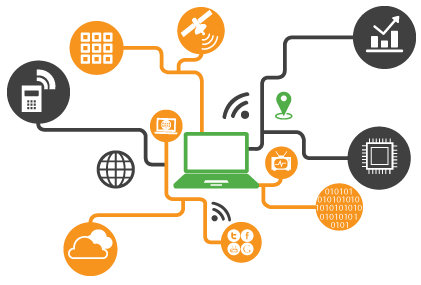

WELCOME TO IYI |
|---|
INNOVATE YOUR INTELLIGENCE
|

.png) COMMUNICATION TOOLS
COMMUNICATION TOOLS.png) DRONE COMPONENTS
DRONE COMPONENTS.png) IOT MODULES
IOT MODULES.png) MICROCONTROLLERS
MICROCONTROLLERS.png) PYTHON
PYTHON.png) ML
ML.png) FIREBASE
FIREBASE.png) IOT
IOT.png) DRONE
DRONE.png) AI
AI.png) 5G IOT
5G IOTTop Trending Technologies for 2020
Technology is now evolving at such a rapid pace that annual predictions of trends can seem out-of-date before they even go live as a published blog post or article. As technology evolves, it enables even faster change and progress, causing the acceleration of the rate of change, until eventually, it will become exponential.
Technology-based careers don’t change at that same speed, but they do evolve, and the savvy IT professional recognizes that his or her role will not stay the same. The IT worker of the 21st century will constantly be learning, out of necessity if
What does this mean for you? It means staying current with technology trends. And it means keeping your eyes on the future, to know which skills you’ll need to know.
Here are eight trending technologies you should watch for in 2019, and some of the jobs that will be created by these trends.

Artificial Intelligence

Machine Learning
RPA

IoT
Blockchain
Edge computing
VR & AR

Cyber Security

Machine Learning is a subset of AI. With Machine Learning, computers are programmed to learn to do something they are not programmed to do: They literally learn by discovering patterns and insights from data. In general, we have two types of learning, supervised and unsupervised.
While Machine Learning is a subset of AI, we also have subsets within the domain of Machine Learning, including neural networks, natural language processing (NLP), and deep learning. Each of these subsets offers an opportunity for specializing in a career field that will only grow.
Machine Learning is rapidly being deployed in all kinds of industries, creating a huge demand for skilled professionals. The Machine Learning market is expected to grow to $8.81 billion by 2022. Machine Learning applications are used for data analytics, data mining and pattern recognition. On the consumer end, Machine Learning powers web search results, real-time ads, and network intrusion detection, to name only a few of the many tasks it can do.
In addition to completing countless tasks on our behalf, it is generating jobs. Machine Learning jobs rank among the top emerging jobs on LinkedIn, with almost 2,000 job listings posted. And these jobs pay well: In 2017, the median salary for a machine learning engineer was $106,225. Machine Learning jobs include engineers, developers, researchers, and data scientists.

Like AI and Machine Learning, Robotic Process Automation, or RPA, is another technology that is automating jobs. RPA is the use of software to automate business processes such as interpreting applications, processing transactions, dealing with data, and even replying to emails. RPA automates repetitive tasks that people used to do. These are not just the menial tasks of a low-paid worker: up to 45 percent of the activities we do can be automated, including the work of financial managers, doctors, and CEOs.
Although Forrester Research estimates RPA automation will threaten the livelihood of 230 million or more knowledge workers or approximately 9 percent of the global workforce, RPA is also creating new jobs while altering existing jobs. McKinsey finds that less than 5 percent of occupations can be totally automated, but about 60 percent can be partially automated.
For you as the IT professional looking to the future and trying to understand technology trends, RPA offers plenty of career opportunities, including developer, project manager, business analyst, solution architect, and consultant. And these jobs pay well. SimplyHired.com says the average RPA salary is $73,861, but that is the average compiled from salaries for junior-level developers up to senior solution architects, with the top 10 percent earning over $141,000 annually.
Although most people think of blockchain technology in relation to cryptocurrencies such as Bitcoin, blockchain offers security that is useful in many other ways. In the simplest of terms, blockchain can be described as data you can only add to, not take away from or change. Hence the term “chain” because you’re making a chain of data. Not being able to change the previous blocks is what makes it so secure. In addition, blockchains are consensus-driven, as explained in this Forbes article, so no one entity can take control of the data. With blockchain, you don’t need a trusted third-party to oversee or validate transactions.
This heightened security is why blockchain is used for cryptocurrency, and why it can play a significant role in protecting information such as personal medical data. Blockchain could be used to drastically improve the global supply chain, as described here, as well as protect assets such as art and real estate.
And as the use of blockchain technology increases, so too does the demand for skilled professionals. In that regard, we are already behind. According to Techcrunch, blockchain-related jobs are the second-fastest growing category of jobs, with 14 job openings for every one blockchain developer. A blockchain developer specializes in developing and implementing architecture and solutions using blockchain technology. The average yearly salary of a blockchain developer is $130,000.
Formerly a technology trend to watch, cloud computing has become mainstream, with major players AWS (Amazon Web Services), Microsoft Azure and Google Cloud dominating the market. The adoption of cloud computing is still growing, as more and more businesses migrate to a cloud solution. But it’s no longer the emerging technology. Edge is. Move over, cloud computing, and make way for the edge.
As the quantity of data we’re dealing with continues to increase, we’ve realized the shortcomings of cloud computing in some situations. Edge computing is designed to help solve some of those problems as a way to bypass the latency caused by cloud computing and getting data to a data center for processing. It can exist “on the edge,” if you will, closer to where computing needs to happen. For this reason, edge computing can be used to process time-sensitive data in remote locations with limited or no connectivity to a centralized location. In those situations, edge computing can act like mini datacenters. Edge computing will increase as use the Internet of Things (IoT) devices increases. By 2022, the global edge computing market is expected to reach $6.72 billion.

Virtual Reality (VR) immerses the user in an environment while Augment Reality (AR) enhances their environment. Although VR has primarily been used for gaming thus far, it has also been used for training, as with VirtualShip, a simulation
software used to train U.S. Navy, Army and Coast Guard ship captains. The popular Pokemon Go is an example of AR.
Both have enormous potential in training, entertainment, education, marketing, and even rehabilitation after an injury. Either could be used to train doctors to do surgery, offer museum-goers a deeper experience, enhance theme parks,
or
even enhance marketing, as with this Pepsi Max bus shelter.
According to an article at Monster.com, the demand for job candidates with VR knowledge is up 37 percent, but the potential employees are in short supply. That demand will only increase. There are major players in the VR market, like Google, Samsung, and Oculus, but plenty of startups are forming and they will be hiring—or trying to, in light of the shortage. Getting started in VR doesn’t require a lot of specialized knowledge. Basic programming skills and a forward-thinking mindset can land a job, although other employers will be looking for optics as a skill-set and hardware engineers as well.

Cybersecurity might not seem like emerging technology, given that it has been around for a while, but it is evolving just as other technologies are. That’s in part because threats are constantly new. The malevolent hackers who are trying to illegally access data are not going to give up any time soon, and they will continue to find ways to get through even the toughest security measures. It’s also in part because new technology is being adapted to enhance security. Three of those advancements are hardware authentication, cloud technology, and deep learning, according to one expert. Another adds data loss prevention and behavioral analytics to the list. As long as we have hackers, we will have cybersecurity as an emerging technology because it will constantly evolve to defend against those hackers.
As proof of the strong need for cybersecurity professionals, the number of cybersecurity jobs is growing three times faster than other tech jobs. However, we’re falling short when it comes to filling those jobs. As a result, it’s predicted that we will have 3.5 million unfilled cybersecurity jobs by 2021.
Many cybersecurity jobs pay six-figure incomes, and roles can range from the ethical hacker to security engineer to Chief Security Officer, offering a promising career path for someone who wants to get into and stick with this domain.
Although it sounds like a game you’d play on your smartphone, the Internet of Things (IoT) is the future. Many “things” are now being built with WiFi connectivity, meaning they can be connected to the Internet—and to each other. Hence, the Internet of Things, or IoT. IoT enables devices, home appliances, cars and much more to be connected to and exchange data over the Internet. And we’re only in the beginning stages of IoT: The number of IoT devices reached 8.4 billion in 2017 is and expected to reach 30 billion devices by 2020.
As consumers, we’re already using and benefitting from IoT. We can lock our doors remotely if we forget to when we leave for work and preheat our ovens on our way home from work, all while tracking our fitness on our Fitbits and hailing a ride with Lyft. But businesses also have much to gain now and in the near future.
The IoT can enable better safety, efficiency, and decision making for businesses as data is collected and analyzed. It can enable predictive maintenance, speed up medical care, improve customer service, and offer benefits we haven’t even imagined yet.

Why is IoT needed?
IoT wants to connect all potential objects to interact each other on the internet to provide secure, comfort life for human. Internet of Things (IoT) makes our world as possible as connected together. ... Embedded computing devices would be exposed to internet influence.
Why is IoT technology?
The “Internet of Things” (IoT) may sound complex, but in actuality, is a fairly simple concept to understand. On a very high level, IoT is the ability for things that contain embedded technologies to sense, communicate, interact, and collaborate with other things, thus creating a network of physical objects.
What are advantages of IoT?
Useful In Monitoring – One of the most apparent advantages of IoT is monitoring. It provides an advantage of knowing things in advance. With this, the exact quantity of supplies, water distribution and consumption, intelligent energy management, and security distribution gets collected easily.
How is IoT useful?
The Internet of Things enables you to gather data from objects through sensors, and control them through actuators. ... However, the most popular use of IoT probably will be the Industrial IoT, as you can see IDC's IoT investment forecast.
Why IoT is the future?
The Future of IoT. IoT devices are becoming a part of the mainstream electronics culture and people are adopting smart devices into their homes faster than ever. ... The more data that IoT devices collect, the smarter they will become. Cities will transform into smart cities through the use of IoT connected devices.
How can I learn IoT technology?
Here are six tips from IoT experts on how to break into a career developing connected devices. 1.Gain a deep understanding of sensors. ... 2.Focus on user interface. ... 3.Learn JavaScript or Python. ... 4.Play with a Raspberry Pi. ... 5.Find a community. ... 6.Keep your skills cutting edge.
Is Alexa an example of IoT?
The internet is everywhere, thanks to the Internet of Things (IoT). ... Well-known examples of IoT devices include smart speakers like Amazon Alexa or Google Home, smartwatches like the Apple Watch, internet-connected baby monitors, video doorbells, and even toys.
Why do we need IoT platform?
An IoT platform is actually a suite of components that enables deployment of apps that monitor, control and manage the devices connected to a common server. The suite also allows the connected device to transmit and collect data from one another.
Does IoT have future?
By 2025, it is estimated that there will be more than to 21 billion IoT devices. A quick look back shows where IoT devices are going. Consider: In 2016, there were more than 4.7 billion things connected to the internet, according to IOT Analytics. ... The market will increase to nearly 11.6 billion IoT devices.
Who is father of IoT?
Kevin Ashton Father of IoT, Kevin Ashton, says, 'if you think IoT is a buzzword, your business will fail'.
Does IoT require coding?
C++ is an alternative if the IoT device requires more complex tasks, think thermostats and smart toasters rather than devices that detect moisture or heat. ... JavaScript is another popular Web application language, but developers see Python as superior for IoT projects, due to its support for embedded programming.
Why IoT security is important?
While businesses cannot stop IoT attacks from happening, they can be proactive in mitigating threats to network security and protecting valuable data and IT systems. Emerging platforms like blockchain can help secure IoT devices by getting rid of a central authority in IoT networks.
Which IoT platform is best?
Top IoT Platforms 1.Microsoft Azure IoT. 2.Amazon Web Services or AWS. 3.Google Cloud Platform. 4.ThingWorx. 5.Cisco IoT Cloud Connect. 6.HP's Universal of Things. 7.SAP Cloud Platform. 8.Oracle Internet of Things.